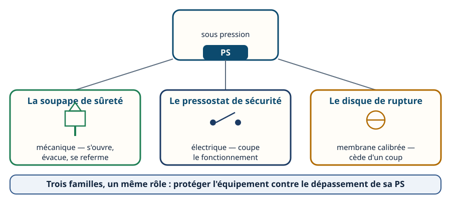
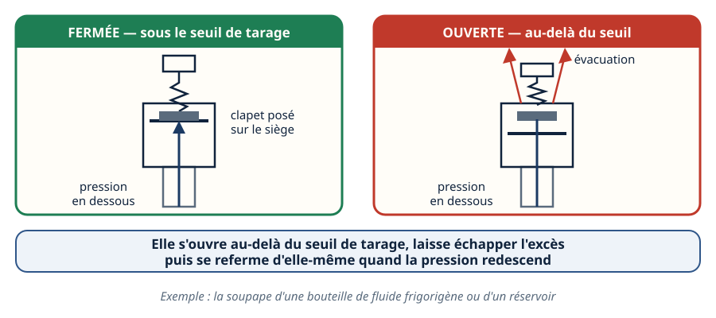
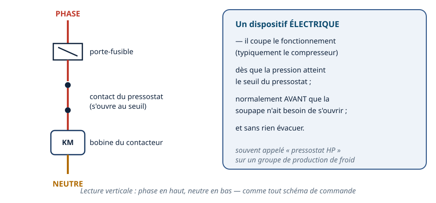
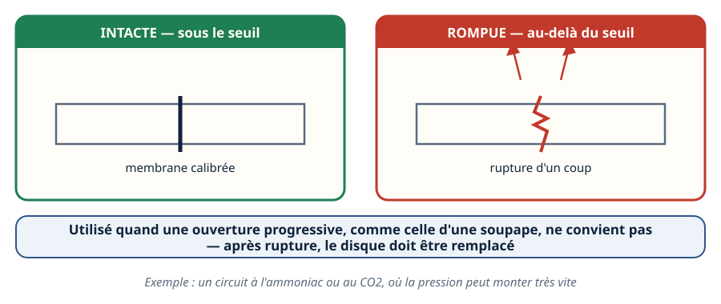
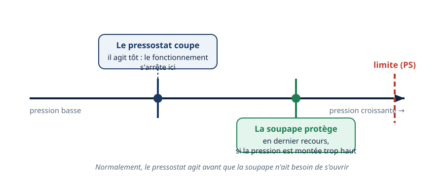
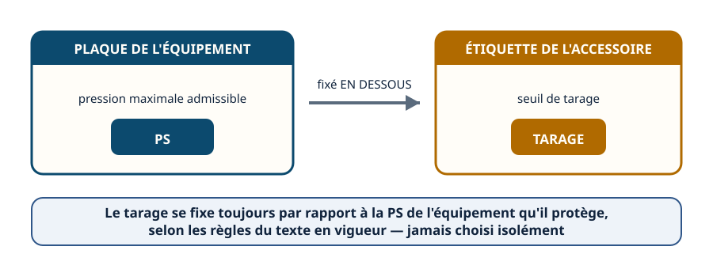
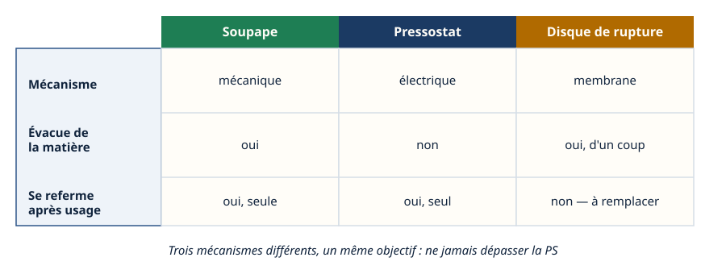
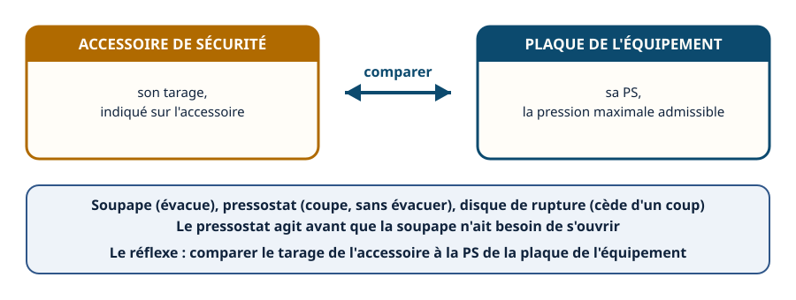

La DESP · niveau BTS
Soupapes & sécurités — les accessoires qui protègent l'équipement
Mini-station commentée · 8 écrans et 4 questions · environ 10 minutes
À la fin de la station, vous savez reconnaître les trois accessoires de sécurité d'un équipement sous pression, expliquer comment chacun agit, dans quel ordre ils interviennent — et le réflexe à avoir : comparer le tarage indiqué à la PS de la plaque de l'équipement.
Chaque écran peut être expliqué à voix haute : le bouton « Écouter » commente ce que vous voyez. Rien n'est dit qui ne soit aussi écrit.
Écran 1 sur 8
Trois accessoires, un même rôle
La directive DESP encadre les équipements sous pression au-delà d'un seuil de pression maximale admissible, notée PS. Pour éviter que cette PS ne soit dépassée, l'équipement porte des accessoires de sécurité.
Cette station en présente trois : la soupape de sûreté, le pressostat de sécurité et le disque de rupture. Chacun agit d'une manière différente, mais tous protègent le même équipement contre le même risque.

Écran 2 sur 8
La soupape de sûreté : elle s'ouvre, puis se referme
La soupape de sûreté est un dispositif mécanique. Tant que la pression reste sous son seuil de tarage, elle reste fermée. Dès que la pression dépasse ce seuil, elle s'ouvre pour évacuer l'excès — elle laisse échapper de la matière. Quand la pression redescend, elle se referme d'elle-même.
On la trouve par exemple sur une bouteille de fluide frigorigène ou sur un réservoir.

Écran 3 sur 8
Le pressostat de sécurité : il coupe avant
Le pressostat de sécurité est un dispositif électrique. Il coupe le fonctionnement — typiquement le compresseur — dès que la pression atteint son seuil. Contrairement à la soupape, il n'évacue rien : il agit en amont, avant que la pression n'ait besoin d'être relâchée.
Sur un groupe de production de froid, on le désigne souvent par pressostat HP, pour haute pression.

Écran 4 sur 8
Le disque de rupture : une membrane qui cède d'un coup
Le disque de rupture est une membrane calibrée, montée sur le circuit. Tant que la pression reste sous son seuil, elle reste intacte. Au-delà, elle cède d'un coup — elle ne s'ouvre pas progressivement comme une soupape.
On l'utilise notamment quand une ouverture progressive ne convient pas : par exemple sur un circuit à l'ammoniac ou au CO2, où la pression peut monter très vite.

Écran 5 sur 8
La hiérarchie de protection : qui agit en premier
Les deux accessoires n'interviennent normalement pas au même moment. Le pressostat agit tôt : il coupe le fonctionnement avant que la pression ne continue à monter. La soupape agit en dernier recours : elle protège si la pression est quand même montée trop haut, juste avant la limite mécanique de l'équipement.
Normalement, le pressostat agit avant que la soupape n'ait besoin de s'ouvrir.

Écran 6 sur 8
Le tarage se lit par rapport à la PS
Le seuil de déclenchement d'un accessoire de sécurité — son tarage — n'est pas fixé au hasard. Il est établi en dessous de la PS de l'équipement qu'il protège, la pression maximale admissible inscrite sur sa plaque, selon les règles du texte en vigueur.
Un accessoire de sécurité se choisit donc toujours en fonction de l'équipement qu'il équipe, jamais isolément.

Écran 7 sur 8
Comparatif : trois mécanismes, un même objectif
Trois mécanismes différents, chacun avec ses propres réglages :
- la soupape est mécanique, évacue de la matière, puis se referme seule ;
- le pressostat est électrique, n'évacue rien, et se referme seul quand la pression redescend ;
- le disque de rupture est une membrane, évacue d'un coup, et ne se referme pas — il doit être remplacé après usage.

Écran 8 sur 8
Bilan et le réflexe
- La DESP encadre les équipements sous pression au-delà d'un seuil de PS.
- Trois accessoires : la soupape (mécanique, évacue), le pressostat (électrique, coupe sans évacuer), le disque de rupture (membrane, cède d'un coup).
- Hiérarchie : le pressostat agit avant que la soupape n'ait besoin de s'ouvrir.
- Le tarage se fixe toujours en dessous de la PS de l'équipement, selon le texte en vigueur.
Le réflexe : comparer le tarage indiqué sur l'accessoire à la PS inscrite sur la plaque de l'équipement.

Question 1 sur 4
La soupape de sûreté : que se passe-t-il quand le tarage est dépassé ?
Question 2 sur 4
Le pressostat de sécurité : que fait-il, et à quel moment ?
Question 3 sur 4
Pourquoi utilise-t-on parfois un disque de rupture plutôt qu'une soupape ?
Question 4 sur 4
Comment sait-on si le tarage d'un accessoire de sécurité convient à un équipement ?
Les correspondances de la station
- NF EN 378 (même sous-ligne, en préparation) — les accessoires de sécurité et leurs exigences propres au circuit frigorifique sont aussi encadrés par cette norme.
Cette station est en préparation sur le plan du réseau.